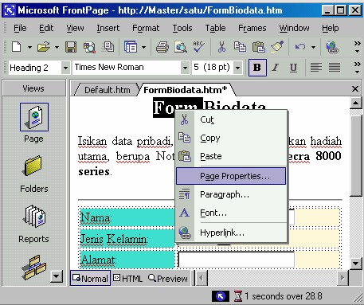

3. Menu dari klik kanan
Jangan lupa untuk memanfaatkan klik kanan, yang menyediakan akses menu lebih
cepat, terutama perintah-perintah pengeditan item seperti Cut, Copy, Paste dan
perintah pembukaan kotak dialog, terutama kotak dialog-kotak dialog Properties.
Di titik manapun Anda klik kanan dalam area kerja, Anda akan melihat perintah
Page Properties; klik pilihan ini untuk membuka kotak dialog Page Properties.
Anda juga akan melihat perintah lainnya, tergantung item apa yang Anda klik.
• Klik sebuah gambar akan menghasilkan perintah-perintah Cut, Copy,
Paste, Theme, Shared Borders, Page Properties dan Image Properties.
• Klik sebuah garis akan menghasilkan perintah-perintah Copy, Paste,
Theme, Shared Borders, Page Properties, Font Properties dan
Horizontal Line Properties.
• Klik teks akan menghasilkan perintah-perintah Copy, Paste, Theme,
Shared Borders, Page Properties, Font Properties dan Paragraph
Properties
• Klik pada form untuk akan menghasilkan perintah-perintah Copy,
Paste, Theme, Shared Borders, Page Properties, Font Properties dan
Form Properties;
• Klik pada WebBot untuk akan menghasilkan perintah-perintah Copy,
Paste, Theme, Shared Borders, Page Properties dan WebBot
Component Properties; dan seterusnya.

Gambar 5.11 Menu pop-up pada image/gambar
Copyright © Herlan Lesmana
Created with the Freeware Edition of HelpNDoc: Easily create HTML Help documents